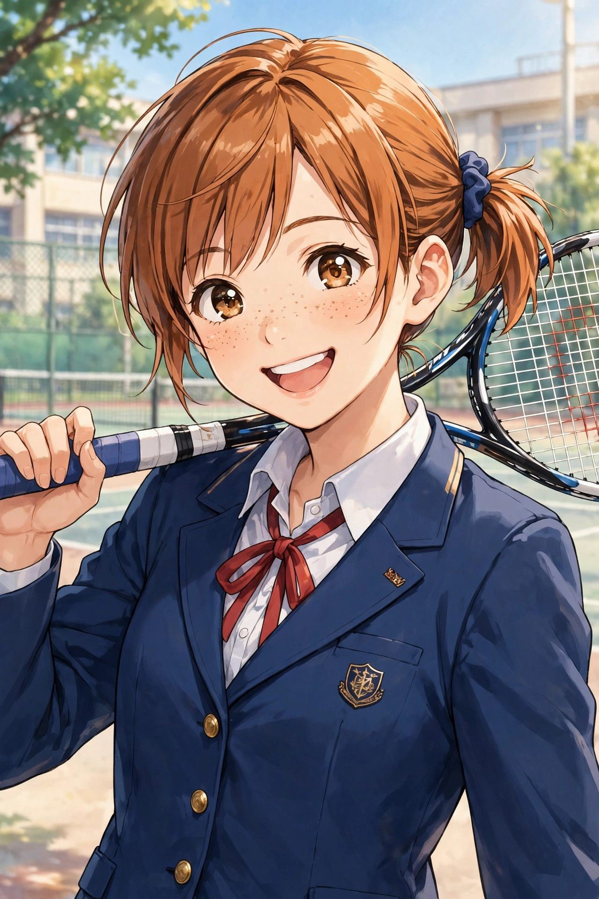
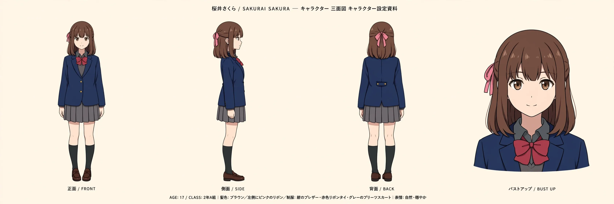
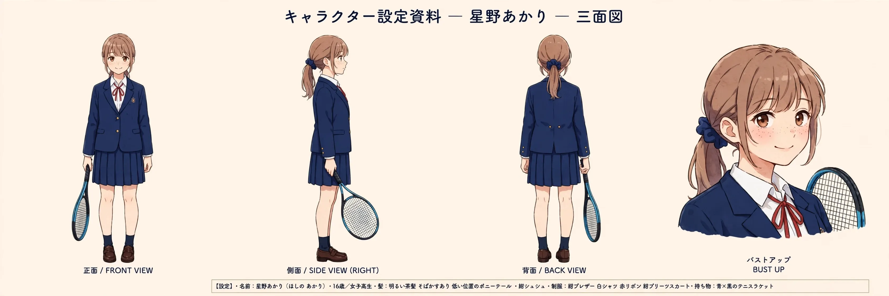
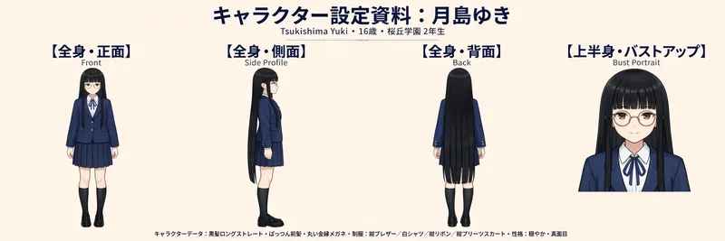
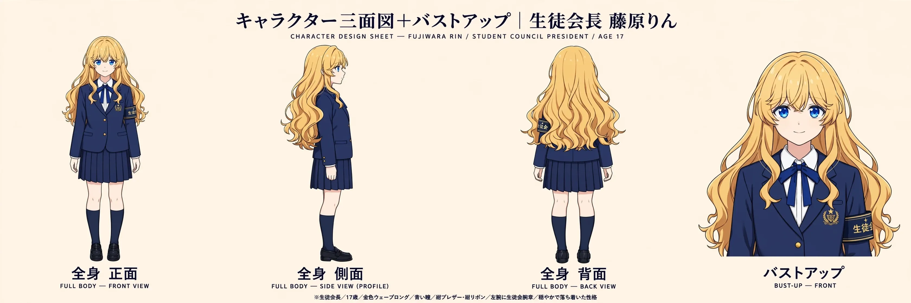

SAKURA MEMORIAL
桜色メモリアル
Now Loading.....
0%
Now Loading.....
0%
🌸 ローディング完了
〜 ときめき学園物語 〜
〜 ときめき学園物語 〜
私立桜丘黒羽学園、高校1年の春。「卒業式の日、校舎の屋上で告白すると恋が実る」という神話のあるこの学園で、3年間が始まる。




〜 ときめき学園物語 〜
卒業式の日、屋上で待つのは――誰？
私立桜丘黒羽学園、高校1年の春。「卒業式の日、校舎の屋上で告白すると恋が実る」という神話のあるこの学園で、3年間が始まる。勉強も、行事も、恋も。全部を駆け抜けた先で、あなたは誰と卒業式を迎えますか。
🎵 主題歌は YouTube でも公開中です
舞台は、栃木県大田原市・黒羽の町。桜の名所として知られる私立桜丘黒羽学園。主人公はこの春、高校1年生になります。隣の家に住む幼なじみ、部活に打ち込む同級生、図書室で静かに本を読む少女、学園をまとめる生徒会長――出会いは、もう始まっています。
この学園には、代々伝わる神話があります。「卒業式の日、校舎の屋上で告白すると、その恋は必ず実る」。普段は立入禁止の屋上も、卒業式の日だけは生徒会が鍵を開ける決まり。3年後のその日、屋上で待つのは誰なのか、迎えに行くのは誰なのかは、あなたの3年間の過ごし方しだいです。
各ヒロインには4章立ての個別ストーリーがあります。出会いから、秘密や悩みに触れる時間、本音が見える瞬間へ。好感度だけでなく、信頼度・親密度を積み重ねることで、物語は少しずつ深まっていきます。ほかの子との距離感を間違えれば、傷心や嫉妬が影を落とすことも。転校生のライバル登場など、恋の波乱も待ち受けています。
入学式と桜の下の再会、屋上の伝説、体育祭、弁論大会。高校生活の幕開けと、最初のときめき。
梅雨の図書室、水泳大会、七夕、期末テスト、海、夏祭り、芭蕉の里くろばね夏まつり・市民花火大会、プラネタリウム、水族館の夜。距離が一気に縮まる季節。
文化祭と後夜祭のフォークダンス、ハロウィン、修学旅行、音楽室コンサート、紅葉の放課後。彼女の「本音」が見え始める頃。
スキー、初詣、クリスマス、イルミネーション、バレンタイン。そして卒業式――屋上への誘い。
隣の家に住む幼なじみ。明るくて面倒見がよく、クラスの人気者。少しお節介で、自分の気持ちは後回しにしがち。小さい頃、桜の木の下で交わした約束を、今も大切にしている。
いつも全力、笑顔がまぶしいテニス部のエース。負けず嫌いで、弱音を吐くのが苦手なため、無理を隠してしまうことも。弱った人を見ると放っておけない、熱くてまっすぐな性格。
静かで本が好きな、人と話すのが少し苦手な少女。でも好きな本の話になると目が輝く。自作の小説のことは、誰にも言えない秘密。雪の日の図書室で、少しずつ心を開いていく。
成績優秀、ピアノも弾ける才女で、学園の生徒会長。凛とした完璧主義者で、期待に応えようと無理をしがち。実は甘いものと猫に弱い一面がある。屋上の鍵を開けるのは、彼女の役目。
主人公（あなた）：名前と誕生日、3年間の目標を決めて入学します。誕生日によって伸びやすい能力が少し変わります。
ヒロイン4人の設定資料（三面図）です。動画づくりや二次制作の資料にもどうぞ。




……なお、保健室の先生には、まだ誰も知らない秘密があるらしい。部活で怪我をした時は、保健室を訪ねてみてください。
1ターンは1週間、全144週間（3年間）。コマンド14種を選んで、基本10種＋系統別評価5種＋スキル6種の全21項目のパラメータを育てます。ストレスを溜めすぎると倒れてしまうので、休養も大切です。
好感度・信頼度・親密度・嫉妬度の4つで関係が育ちます。好感度だけでは卒業の告白は実りません。放置や浮気な行動は傷心度を上げるので注意。プロフィールは好感度で5段階に開放されます。
年間行事46種に加え、相合傘、雨宿り、ケンカと仲直り、ライバル登場など、月・好感度・能力値で分岐する追加イベントも。翌週に「余韻」のひとこまが入ることもあります。
デート先は14か所（好感度が進むとお部屋デートも）。相手の好きな場所・好物のプレゼントが効果的です。所持金の仕組みがあり、デートにはお金がかかり、カフェのバイトで稼げます。
集めた思い出はアルバムでいつでも読み返せます。実績は全14種、コンプリート率も表示。エンディング後は卒業アルバムとして3年間の記録がまとまります。
恋愛成就のほか、親友エンド、ライバルエンド、仕事成功型・趣味没頭型などの人生型エンディングまで多彩。クリアすると周回特典がついて、次の1年が少し有利になります。
| タイトル | 桜色メモリアル 〜ときめき学園物語〜 |
|---|---|
| ジャンル | 1人用・育成シミュレーション／恋愛アドベンチャー |
| 制作・著作 | Snow Moon Games |
| イラスト | ヒロイン4人×15枚＝60枚＋新規79枚（OP／保健室の先生／句碑／地域イベント／バッドエンド／特典。すべて assets フォルダのWebP画像）＋キャラクター三面図4枚 |
| BGM | Web Audioによる場面別12曲の合成演奏（管理機能でMP3差し替え可） |
| セーブ | 3スロット（ブラウザに自動保存）＋ファイル保存対応 |
| 動作環境 | モダンブラウザ（PC／スマートフォン）。表示は明るいテーマ固定 |
『桜色メモリアル 〜ときめき学園物語〜』のメンテナンス用機能の説明です（この説明はゲーム本体の中に組み込まれています）。
制作・著作： Snow Moon Games
本作の企画・プログラム・シナリオを手がけた作者名義です。ゲーム本体のタイトル画面下部にもクレジットされています（その作者名をクリックすると管理メニューが開きます）。本作は全年齢対象の公式版です。画像やセリフを差し替えた改造版は非公式であり、Snow Moon Gamesとは無関係です。
『桜色メモリアル 〜ときめき学園物語〜』は、私立桜丘黒羽学園を舞台にした1人用の育成＋恋愛シミュレーションゲームです。高校入学から卒業までの全144週間（3年間）、毎週コマンドを選んでパラメータを育て、ヒロインたちとの物語を進めます。「卒業式の日、校舎の屋上で告白すると恋が実る」という学園の伝説に向かって、3年間を過ごす物語です。
| ジャンル | 1人用・育成シミュレーション／恋愛アドベンチャー |
|---|---|
| ヒロイン | 4人（桜井さくら／星野あかり／月島ゆき／藤原りん）、各15枚・合計60枚の差分イラスト、各4章立ての個別ストーリー |
| システム | 全144週間（3年間）・コマンド14種・パラメータ21項目（基本10＋評価5＋スキル6）・関係値4種（好感度／信頼度／親密度／嫉妬度）＋傷心度・年間行事46種・デート14か所・実績10種・マルチエンディング（恋愛／親友／ライバル／人生型ほか）・周回特典 |
| セーブ | 3スロット（ブラウザの localStorage に自動保存）＋JSONファイルへの書き出し／読み込み対応。周回データ・アルバム収集・管理データも自動保存されます |
| 技術仕様 | ファイル分割構成（index.html／style.css／engine.js／story.js／data.js、外部ライブラリ不使用）。イラストは assets フォルダの WebP 画像、BGMは Web Audio API による場面別12曲の合成演奏（管理機能でMP3への差し替え可）。スマートフォン表示・モーション軽減設定に対応（表示は明るいテーマ固定） |
| 動作環境 | モダンブラウザ（PC／スマートフォン） |
タイトル画面いちばん下のクレジットで、作者名 Snow Moon Games をクリックすると管理メニューが開きます（点線の下線が目印）。プレイヤー向けのボタン類とは別にしてあるので、通常プレイでは目立ちません。
sakura-memorial-admin.json を書き出してください。曲ごとにMP3ファイルのURLを指定できます。空欄の曲は標準の合成BGMのまま流れます。指定した曲はループ再生され、音ON/OFFボタンとも連動します。
| キー | 場面 |
|---|---|
opening | プロローグ |
title | タイトル画面 |
daily | 本編の通常時 |
event | イベント全般 |
choice | やきもち・誤解・ライバル・秘密などドキドキ系 |
date | デート・お部屋・電話・メール |
sad | 寝込み・見舞い・ケンカ・病気・別れ |
ending | 卒業・告白・エンディング |
ストーリー再生中、画面の右下に小さく No.○○ ・ 現在シーン/全シーン が表示されます。このNoを管理メニューで指定して編集します。
| Noの形式 | 対象 |
|---|---|
P-001 | プロローグ |
EV-02 〜 EV-47 | 週ごとの年間行事（数字＝その行事がある週番号） |
ST-sakura-1 など | ヒロインの物語（ヒロインID＋章番号）。IDは sakura / akari / yuki / rin |
HK-hok_cat など | ほっこりイベント（後ろは内部ID） |
CU-001 など | カスタムストーリー（追加時に付けたNo） |
S-123 形式 | 上記以外のイベント（場面名から自動生成される安定した番号） |
Noを指定して、そのストーリーの絵・セリフ・パラメーター効果を上書きできます。元のコードは書き換えず、再生時に差し替える方式なので、削除すれば元に戻ります。
smile / shy / date / yukata / gym / club / winter / ski / sick / planet / sea / grad / ending など。ヒロインが登場するシーンに適用されます（絵URLが優先）。{"0":"差し替えた最初のセリフ","2":"3番目のシーンのセリフ"}
ストーリーの終了時に1回適用されます（スキップした場合も適用されます）。使えるキーは次の通りです。
aff：好感度。ヒロインID → 数値。例 {"aff":{"sakura":5,"rin":-3}}rel：関係値。trust（信頼度）/ close（親密度）/ jealous（嫉妬度）。例 {"rel":{"sakura":{"trust":3,"close":4}}}stats：基本パラメータ。キー：tairyoku 体力 / gakuryoku 学力 / undou 運動 / miryoku 魅力 / kihin 気品 / geijutsu 芸術 / kansei 感受性 / shakou 社交性 / moral モラル / stress ストレスskills：スキル。キー：reigi 礼儀作法 / bungaku 文学 / ongaku 音楽 / ryouri 料理 / souji 掃除洗濯 / kidate 気だてmoney：所持金（円）。例 {"money":500}{"aff":{"sakura":5},"rel":{"sakura":{"trust":3}},"stats":{"gakuryoku":3},"money":500}
JSONで1本まるごと追加します。管理メニューの「テンプレート挿入」で例が入るので、それを書き換えるのが早いです。
{
"no": "CU-001",
"title": "放課後の約束",
"turn": 20,
"hero": "sakura",
"minAff": 30,
"fx": {"aff": {"sakura": 5}},
"scenes": [
{"hero": "sakura", "variant": "smile", "text": "放課後、教室にさくらが戻ってきた。"},
{"hero": "sakura", "variant": "shy", "text": "「ねえ、今日は一緒に帰ろう？」",
"choices": [
{"label": "「いいよ」", "fx": {"aff": {"sakura": 3}}},
{"label": "「用事がある」", "fx": {"aff": {"sakura": -2}}}
]}
]
}
| 項目 | 意味 |
|---|---|
no | ストーリーNo（省略すると CU-連番を自動付与）。右下表示と上書き編集で使います |
title | タイトル（場面タグとログに表示） |
turn | 発動する週（1〜48）。指定するとその週の行動時に年間行事より優先して発生します |
month | 発動する月（turn未指定の時のみ）。turnもmonthも無いと、最初の行動時に発生します |
hero / minAff | 対象ヒロインと、必要な好感度（未指定なら条件なし） |
once | 既定は1回のみ（発生済み記録はゲームのセーブデータ側に残ります）。false にすると条件を満たす週に毎回発生します |
fx | ストーリー終了時の効果（上書き編集の効果と同じ書式） |
scenes | シーンの配列。各シーン：hero（絵のヒロイン）/ variant（差分名）/ img（画像URL、あれば優先）/ who（話者名、省略時はヒロイン名）/ text（セリフ。{first}＝主人公への呼び方（話者ヒロインの好感度で「苗字くん／名前くん／あだ名」に変化。{call} も同じ）、{name}＝フルネーム、{last}＝苗字、{nick}＝あだ名に置換）/ sys:true（システム文）/ player:true（主人公のセリフ）/ choices（選択肢：label と fx） |
『桜色メモリアル 〜ときめき学園物語〜』は、Snow Moon Games が無償で公開するフリーソフトウェアです。
© Snow Moon Games — 『桜色メモリアル 〜ときめき学園物語〜』
この名前で、みんながあなたを呼びます。後から変更はできません。ヒロインの呼び方は、好感度が上がると「苗字くん → 名前くん → あだ名」と変わっていきます。
コマンドを選んで1週間を進めよう。休日デートは「デートに誘う」、贈り物は「プレゼント」から。
好感度は ♥ の数と状態で分かります。絵は全員15枚ずつ・合計60枚あり、コマンドを押すたびに切り替わります（右上の📷表示）。傷心度💔にも注意。
集めた思い出をタップすると、その場面をもう一度読めます。エンディング後に開くと、卒業アルバムとして3年間の記録がまとまります。
スロットはこの端末のブラウザに自動保存されます（次に開いた時も残ります）。別の端末へ移したい時やバックアップには「ファイルに保存」を使ってください。読み込みはファイルからもできます。※ブラウザのデータ削除やシークレットモードでは保存されないことがあります。
作者名クリックで開く管理画面です。制作・著作： Snow Moon Games（『桜色メモリアル 〜ときめき学園物語〜』／1人用・育成シミュレーション）。設定はこの端末のブラウザに自動保存されます。別の端末へ移す時は一番下の「管理データをファイルに保存」で書き出してください。詳しい使い方は 📖 説明ページ（このページ内） を参照。
曲ごとにMP3のURLを指定できます。空欄の曲は標準の合成BGMのままです。「ほっこり／黒羽の出来事／句碑めぐり／個別ストーリー」の欄が空欄の時は、「イベント」の曲が流れます。
「推奨BGM」はタイトル画面のボタン専用です。押すと「タイトル」と「オープニング（プロローグ）」に bgm/bgm01.mp3 が割り当てられ、それ以外のシーンは空欄（標準BGM）になります。タイトル・名前登録・プロローグの3画面では、同じ曲が画面を切り替えても途切れずに流れ続けます。曲ファイルは bgm フォルダに入れてください（画像は assets フォルダのままです）。
画面右下に表示されるストーリーNoを指定して、絵・セリフ・パラメーター効果を上書きします。セリフ差替と効果はJSON形式です（書き方は説明ページ参照）。
JSONで1本追加します。turn（何週目）か month（何月）を指定すると、その週の行動時に最優先で発生します（1回のみ）。
ストーリーNo（画面右下／左下に表示される番号）を入力すると、その場面を直接再生できます。例：P-001、EV-18、ST-yuki-2、HK-hok_ayu、LC-yana、KB-3、CU-001、SC-madam。再生は現在のプレイ状態のまま行われます（パラメータが変化することがあるので、セーブしてからの利用がおすすめです）。
エンディング確認：条件を満たした仮の状態を作って卒業判定を再生します。現在のプレイ状態は上書きされます（確認ダイアログが出ます）。
BGM設定・上書き・カスタムストーリーをまとめて1ファイルに保存／読み込みします（ゲームのセーブとは別ファイルです）。